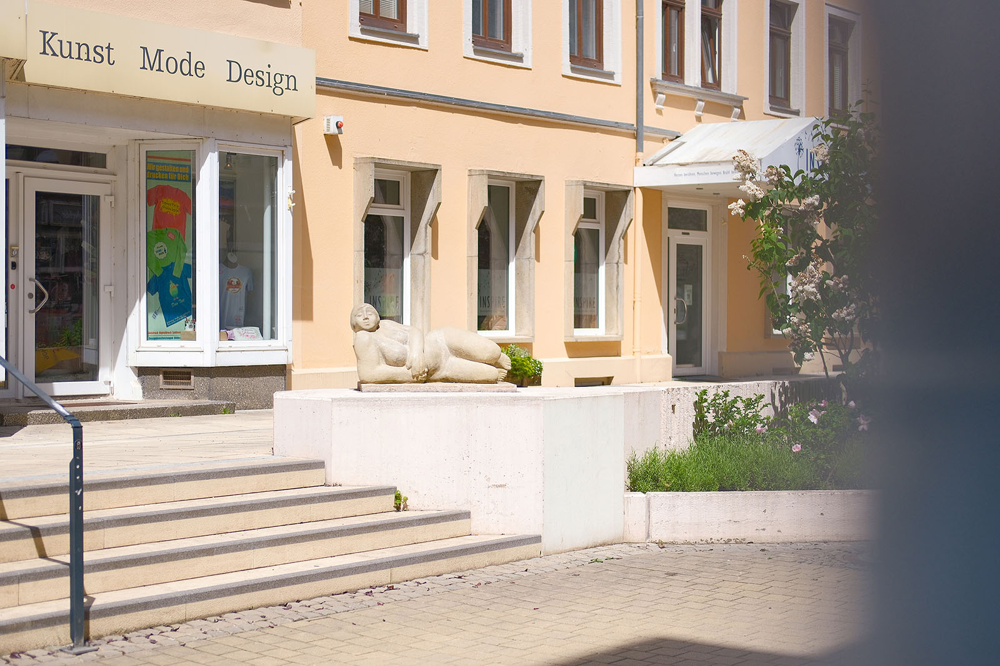
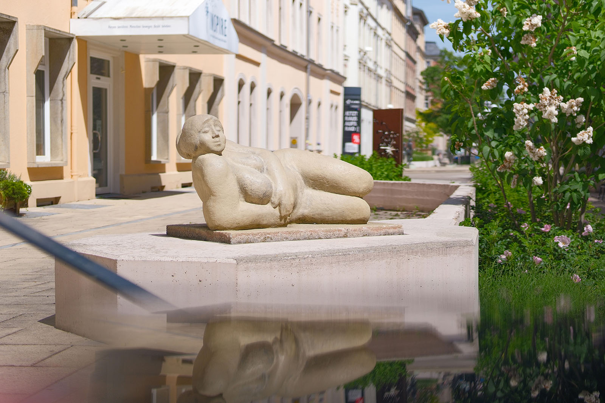
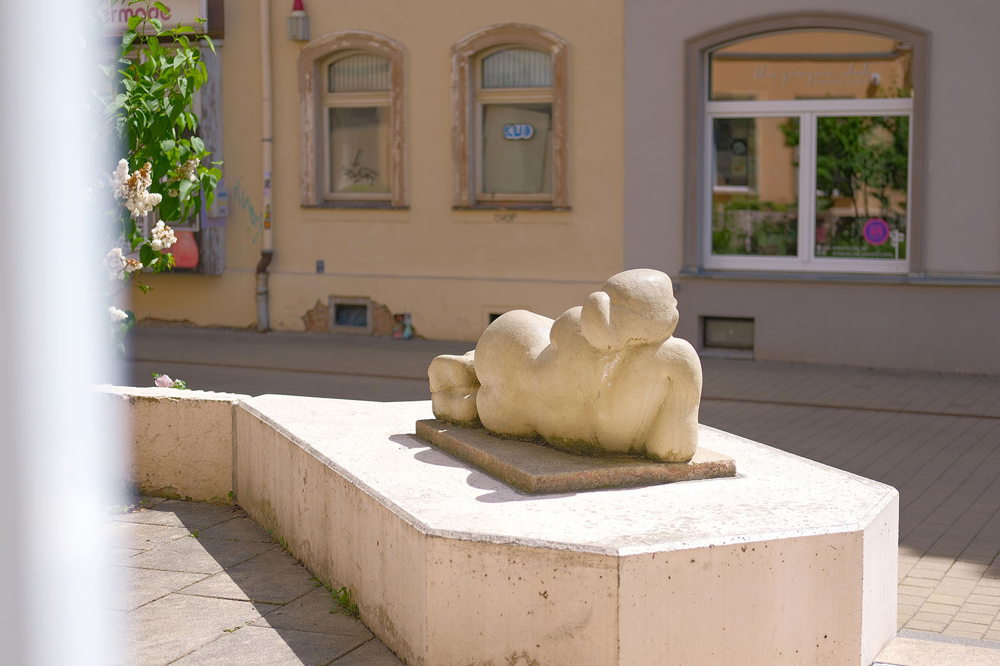
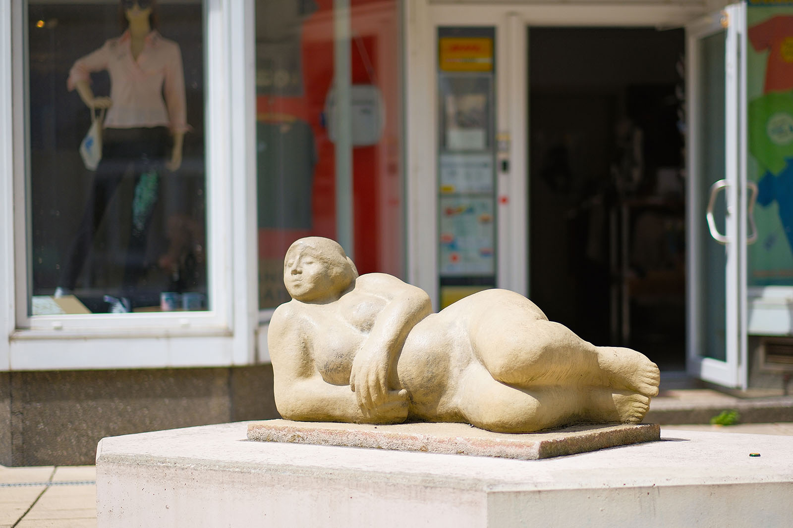
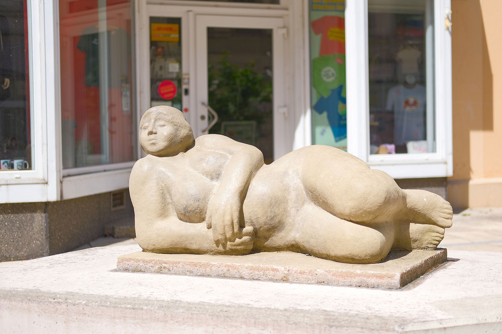

Recherche und Werkbeschreibung: Roman Pilz. Text und Fotografien wechseln sich wie in einem Magazin ab. Ein Klick auf ein Bild öffnet die Großansicht.
Die "Liegende" von Hannes Schulze, dem bekannten Bildhauer aus Plauen, zeigt den Akt einer weiblichen Figur. Auf einer rechteckigen Grundfläche liegt die Frau auf ihrer rechten Seite und stützt sich auf den Arm auf. Der Kopf hebt sich so über ihre Schultern und blickt mit freundlichem Lächeln in Richtung des Fußgängerbereichs. Der linke Arm der Porträtierten umspielt, locker nach vorne fallend, ihre bloßen Brüste. Sie hält die beiden Beine zusammen und zieht sie hoch bis an ihr Gesäß.
Das Gesicht der Frau ist leicht nach rechts gedreht und strahlt Ruhe und Freundlichkeit aus. Die leicht gesenkten Lider geben dem Blick zugleich einen Hauch von Laszivität. Die Haare sind hinter dem Kopf zu einem Knoten und Zopf gebunden. Die Frisur, die weichen Wangen und die insgesamt "robuste" Gestalt der Frau lassen entfernt auch an die volkstümlichen Frauenbilder eines Heinrich Zille denken.
Johannes (meist: Hannes) Schulze wurde 1939 in Plauen geboren und verstarb 2025 am selben Ort. Schulze machte ab 1953 eine Lehre als Maurer und arbeitete dann bis 1957 als Geselle. Von 1957 bis 1961 studierte er in Leipzig an der Fachschule für Angewandte Kunst, deren Abteilung für Plastik von Hellmuth Chemnitz (1903-1969) geleitet wurde, und arbeitete dann bis 1962 kurz als Kunsterzieher.
Ab 1962 war er als freischaffender Bildhauer, Gestalter und Restaurator in seiner Heimatstadt Plauen tätig. Als Künstler schuf Hannes Schulze Standbilder, Relieftafeln und Portraitbüsten aus Holz, Metall und Stein. Von 1972 bis 1990 gehörte er dem Verband Bildender Künstler der DDR an, ab 1991 war er Mitglied des Chemnitzer Künstlerbundes sowie des Bundesverbandes Bildender Künstlerinnen und Künstler.
Besonders viele seiner Arbeiten sind im öffentlichen Raum von Plauen aufgestellt. Eines seiner frühesten Werke sind die "Musizierenden Kinder" vor dem dortigen Arbeitsamt. Als Hauptwerk bezeichnet der Künstler das Kalkstein-Relief zu einem Brecht-Gedicht im Plauener Rathausfoyer (1976).
Besonders populär sind auch die Bronzefiguren "Der befreite Mensch" (1985) am Albertplatz sowie die imaginierte Marktfrau "De Neideidln" am Klostermarkt. Auch in Chemnitz ist der Künstler mit vielen Plastiken vertreten. Er stellte hier ab den 1970er Jahren regelmäßig aus und gestaltete mit seinen Figuren öffentliche Parks und Bauwerke.
Besonders bekannt sind die dreimal täglich erscheinenden sechs Bronzefiguren des Glockenspiels am Alten Chemnitzer Rathaus. Weitere Werke befinden sich in den Chemnitzer Kunstsammlungen, in der Neuen Sächsischen Galerie und im Besitz der TU Chemnitz.
Stolz und selbstbewusst
Betonplastik „Liegende“ von Johannes Schulze am Brühl (1973)
Der Rücken der Frau ist entsprechend der aufgerichteten Haltung weich geschwungen. Die runden Hüften steigen hoch, während die nackten Fußflächen, der Hintern und der Rücken tiefe Linien und Schatten formen. Der Kunststein aus gegossenem Beton ist insgesamt glatt geformt und nur durch die Verwitterung zeigte sich mit den Jahren das feine Korn. Zuletzt wurde die Figur mit einem Farbanstrich versehen, der die gewachsene Patina wieder hell überdeckte und glättete.
Die üppigen weiblichen Formen und Rundungen der Frau verweisen auf Symbole des Weiblichen im weitesten Sinne – zum Beispiel auf die als Fruchtbarkeits- oder Muttergöttinnen gedeuteten Venusfigurinen der Jungsteinzeit. In der modernen Kunst des 20. Jahrhunderts werden archaische Vorbilder der Bildhauerei als Inspiration stark rezipiert.
Auch im (sozialistischen) Realismus werden im Gegensatz zu einer mehr expressionistisch beeinflussten Spielart, vor allem der 1950er und 60er Jahre, sanfte Rundungen und vereinfachte Volumina in der Bildhauerei beliebt. Bei prägenden Bildhauern der DDR wie Gustav Seitz, Waldemar Grzimek, Wieland Förster oder Ingeborg Hunzinger sind solche Tendenzen zu beobachten. Im weitesten Sinne könnte man die "Liegende" vom Brühl auch als eine Schwester von Hunzigers "Sphinx" auf dem Chemnitzer Schloßberg betrachten.
Die "Liegende" wurde im Zuge der baulichen Rekonstruktion und Neugestaltung des Brühls als Fußgängerbereich beauftragt. In Karl-Marx-Stadt (Chemnitz) hatten zunächst der Wiederaufbau des Zentrums und die Lösung der Wohnungsnot durch Neubauten Priorität. Als Mitte der 1970er Jahre begonnen wurde, den Brühl als autofreien Straßenzug mit gemischter Wohn- und Gewerbenutzung zu planen, war das sogar im größeren Rahmen der DDR etwas Besonderes.

Vor allem die Kombination der Instandsetzung von Altbausubstanz mit einer modernen Nutzungs- und Freiraumgestaltung war neu. Die abwechslungsreiche, mit kleinteiligen Geschäften und Gastronomieeinrichtungen belebte Flaniermeile war bis kurz nach der Wende ein großer Erfolg, der von der Bevölkerung rege genutzt wurde.
Die Beauftragung von Künstlern und Gestaltern innerhalb von Planungskollektiven war bei solchen Projekten selbstverständlich. Neben Schulzes Plastik wurden auch eine Figurengruppe von Wilfried Fitzenreiter und eine Brunnengestaltung von Reinhard Grütz realisiert. Während das "Wasserspiel" nahe der Elisenstraße geometrisch-abstrakt geformt ist, tritt das "Urteil des Paris" des Berliner Bildhauers Fitzenreiter aufgrund der räumlichen und thematischen Nähe durchaus in Dialog mit der "Liegenden".
Nur ca. 50 Meter beträgt der Abstand zwischen den figürlichen Aktdarstellungen – beide thematisieren auf direkte oder indirekte Weise den spezifisch männlichen Blick auf weibliche Reize sowie Schönheit, Menschlichkeit und Ungezwungenheit im Allgemeinen. Unterschiede in der Betonung könnten im übertragenen Sinne auch auf die unterschiedlichen Funktionen des Brühls als Stadtraum hindeuten: Die "Liegende" ist weitaus jovialer als der mythologische Paris, der von Zeus (Jupiter) tatsächlich zum Richter der Göttinnen eingesetzt wurde.
Hannes Schulzes Figur verkörpert das Sich-Niederlassen an einem schönen (Wohn-)Ort und den Genuss des Lebens, wohingegen bei den vier Figuren von Fitzenreiter durch den bis ins Unendliche verzögerten Moment des selbstbewussten Anpreisens und der schwerwiegenden Wahl mehr die Verlockungen des Markttreibens und des Konsums zum Thema gemacht werden.

Johannes (meist: Hannes) Schulze wurde 1939 in Plauen geboren und verstarb 2025 am selben Ort. Schulze machte ab 1953 eine Lehre als Maurer und arbeitete dann bis 1957 als Geselle. Von 1957 bis 1961 studierte er in Leipzig an der Fachschule für Angewandte Kunst, deren Abteilung für Plastik von Hellmuth Chemnitz (1903-1969) geleitet wurde, und arbeitete dann bis 1962 kurz als Kunsterzieher.
Ab 1962 war er als freischaffender Bildhauer, Gestalter und Restaurator in seiner Heimatstadt Plauen tätig. Als Künstler schuf Hannes Schulze Standbilder, Relieftafeln und Portraitbüsten aus Holz, Metall und Stein. Von 1972 bis 1990 gehörte er dem Verband Bildender Künstler der DDR an, ab 1991 war er Mitglied des Chemnitzer Künstlerbundes sowie des Bundesverbandes Bildender Künstlerinnen und Künstler.
Besonders viele seiner Arbeiten sind im öffentlichen Raum von Plauen aufgestellt. Eines seiner frühesten Werke sind die "Musizierenden Kinder" vor dem dortigen Arbeitsamt. Als Hauptwerk bezeichnet der Künstler das Kalkstein-Relief zu einem Brecht-Gedicht im Plauener Rathausfoyer (1976).
Besonders populär sind auch die Bronzefiguren "Der befreite Mensch" (1985) am Albertplatz sowie die imaginierte Marktfrau "De Neideidln" am Klostermarkt. Auch in Chemnitz ist der Künstler mit vielen Plastiken vertreten. Er stellte hier ab den 1970er Jahren regelmäßig aus und gestaltete mit seinen Figuren öffentliche Parks und Bauwerke.

Besonders bekannt sind die dreimal täglich erscheinenden sechs Bronzefiguren des Glockenspiels am Alten Chemnitzer Rathaus. Weitere Werke befinden sich in den Chemnitzer Kunstsammlungen, in der Neuen Sächsischen Galerie und im Besitz der TU Chemnitz.

Stolz und selbstbewusst
Betonplastik „Liegende“ von Johannes Schulze am Brühl (1973)
